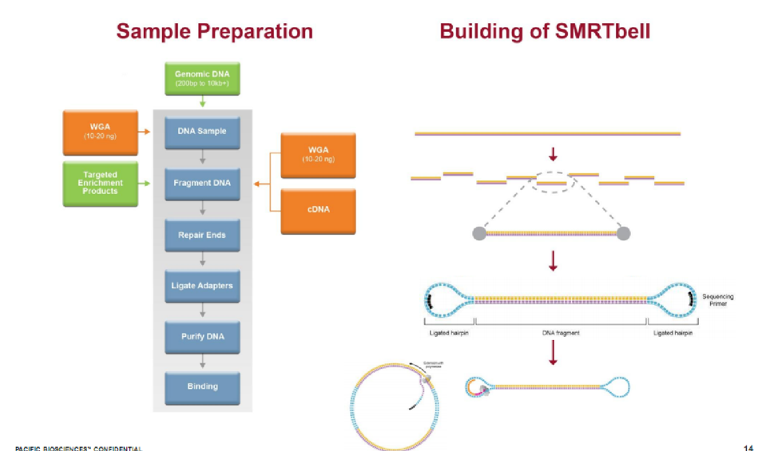
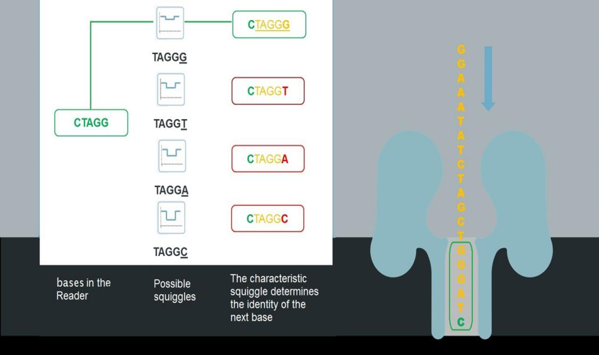
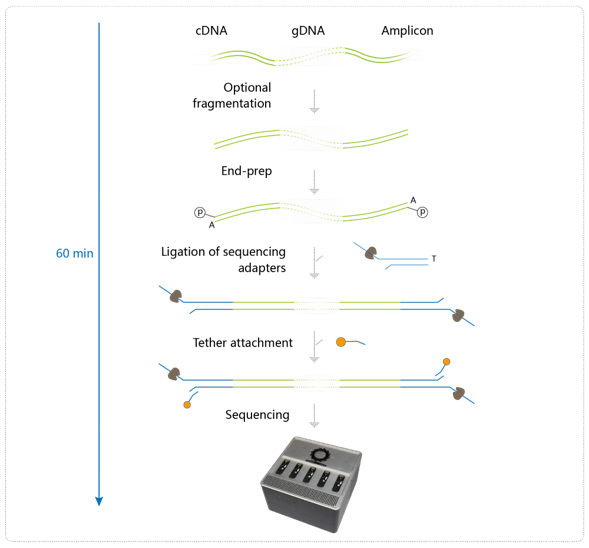
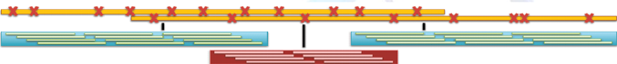
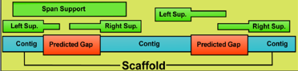
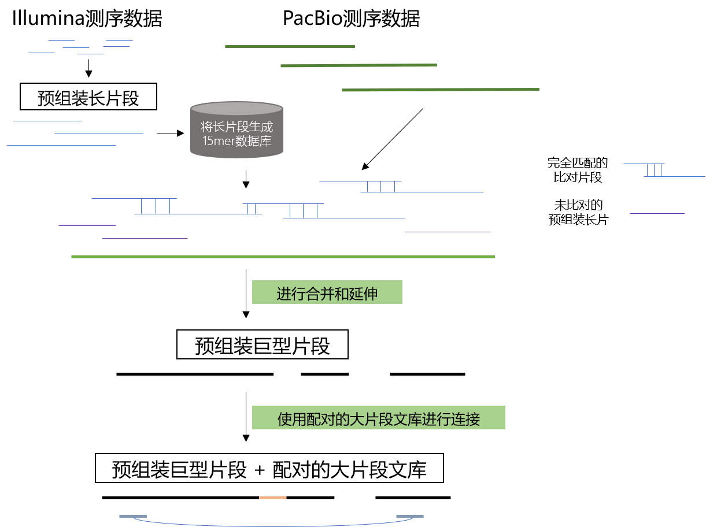

三代测序应用
特点
- 读长较长（Long reads）
- GC偏好性低（Low GC Bias）
应用场景
- 全基因组组装（Genome Assembly）
- 表观遗传分析（Epigenetics
- 宏基因组分析（Metagenomics）
- 结构变异分析（Structural Variations）
- RNA可变剪切分析（RNA Alt-splicing）
技术优势（以PacBio RS II and Sequel为例）
- 使用相对超长的读长，对基因组进行完整组装，并对基因组结构变异进行鉴定；
- 通过一致性获得较高的单分子精度，可为研究结论的确认提供更有力的证据；
- 可通过单分子动力学信息获得碱基的表观修饰；
- 更加简单快速的分析流程，加速研究进度。
新一代 PacBio Sequel
- 体积更小，通量更大，约为RS II的7倍
- SMRT cells 上具有一百万（1 million）ZMWs
样品制备流程

纳米孔单分子实时测序

ONT文库构建流程

基因组组装
应用 : 基因组 de novo 组装
- DNA测序成本更低
- 可应用于更加复杂的基因组
- 解决大片段的结构难题
- PCR-free，No GC-bias
- 更高的N50、contigs数量更少、99.999%的准确率
基于三代数据的组装策略
- SMRT 混合组装:
- 使用较高准确度数据，比如 PacBio CCS 数据或者二代（Illumina）短序列数据，对较低准确度的PacBio Continuous Long Read (“CLR”) 进行矫正组装。
- SMRT Scaffolding:
- 使用 PacBio CLR 对现有Contigs进行进一步延伸。
- 
- SMRT 单独组装:
- 仅使用 PacBio CLR 进行组装，使用HGAP、canu或者WTDBG等。
- SMRT 空洞填补:
- 使用 PacBio CLR 对已有组装进行空洞填补
- 
基于三代数据的de novo组装策略：混合组装

基于三代数据的de novo组装策略：单独组装
- Start with 9.7 kb read
- Align other reads
- Correct observed errors
- Construct accurate consensus sequence
-
Utilizes every bit of data:
- Long reads for continuity
- Shorter reads for improving accuracy
- Accuracy:85.7% → 99.3%, 9089 bp
- Chimera / low quality regions can be filtered out early
- Accurate long consensus reads easier to assemble
三代组装实例分析
细菌基因组：三代直接Finish
ppt中有字的内容会考，没有字的内容不考。